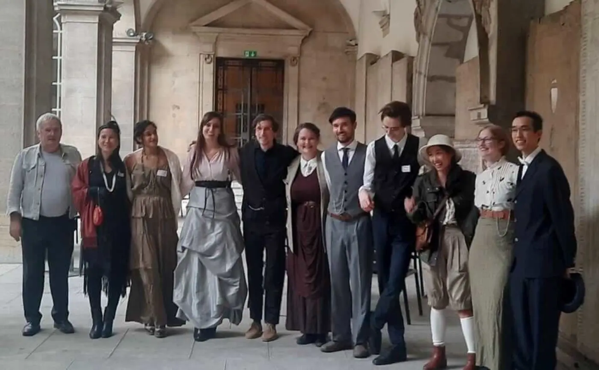
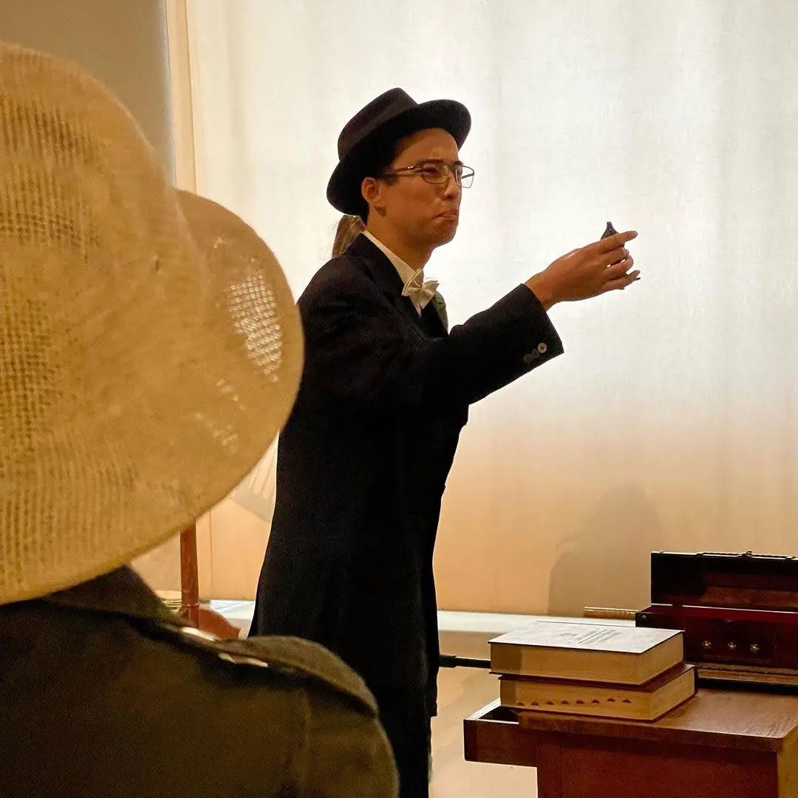
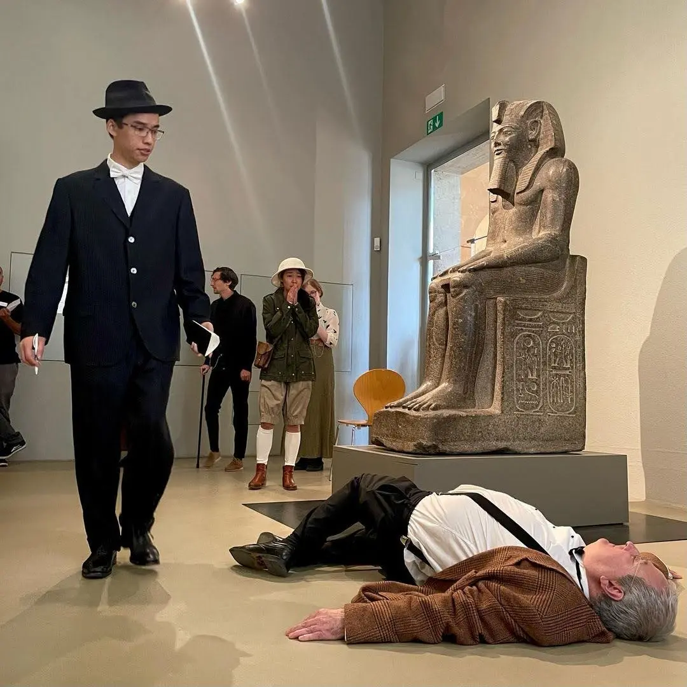
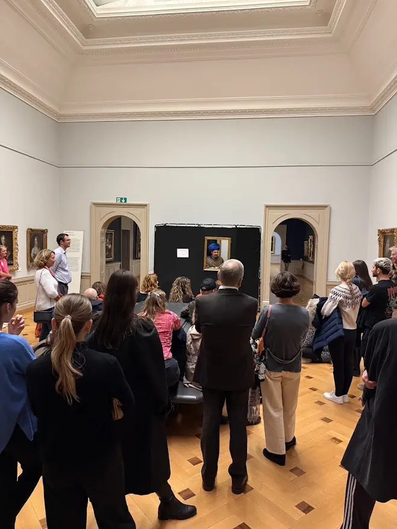

Théâtre immersif · 2022
A MAH-tter of Life and Death
Comment amener le public d’un musée à jouer le jeu, dans un espace public, pendant 90 minutes ? Une enquête immersive originale dans l’aile égyptienne du Musée d’Art et d’Histoire de Genève.
- Rôle
- Création, écriture, mise en scène et production
- Contexte
- Fête du Théâtre, avec le MAH et la troupe d’improvisation The Murderet
- Équipe
- 7 comédiens, 3 meneurs de groupe en personnage, 5 assistants pour guider le public, tous bénévoles
- Calendrier
- Environ cinq mois, des premières idées en mai au spectacle en octobre

La demande
Le musée avait déjà accueilli quelques soirées de type Cluedo. Pour la Fête du Théâtre 2022, il voulait attirer un autre public, en particulier de jeunes adultes internationaux, et leur faire découvrir la collection permanente autrement, dans son aile d’archéologie égyptienne. Nous avons proposé quelque chose de plus ambitieux : transformer cette aile en mystère vivant.
Notre note d’intention :
Je veux que le public (re)découvre le musée de façon ludique, tout en découvrant un nouveau médium : le théâtre immersif.
Le vrai défi de conception : la participation
Il n’y a pas de scène au théâtre immersif. Le public partage l’espace avec les comédiens, et cela change tout. Pour beaucoup, ce serait une première. Certains seraient timides, tous étaient dans un lieu public, et chacun devait se sentir assez en sécurité pour jouer. En même temps, le spectacle devait récompenser les plus audacieux sans laisser les plus réservés de côté. Nous avons donc conçu plusieurs niveaux d’engagement en parallèle :
- Des scènes collectives, où tout le public suit l’histoire principale. Aucune participation requise.
- Une exploration libre : des suspects répartis dans les salles, que le public pouvait interroger pour recueillir des indices.
- Des choix collectifs : des votes permettant au public de peser sur l’enquête.
Le décor : une société d’explorateurs vers 1900, quelque part entre Agatha Christie et Indiana Jones. La collection du musée faisait partie de l’univers de l’histoire, et pas seulement du décor.


Le déroulé de la soirée
À l’arrivée, le public était réparti en trois factions, ce qui créait immédiatement des enjeux. Un chef annonçait son intention de restituer un artefact sacré, la foule se divisait, puis un cri retentissait, un corps était découvert, et l’enquête commençait. Les suspects se dispersaient dans les galeries ; le public les interrogeait, rassemblait des indices et votait pour l’arme du crime. Enfin, tout le monde se retrouvait pour le verdict, suivi de scènes en flash-back reconstituant le crime, et d’une sortie claire de la fiction.
La production
Au-delà de l’écriture et de la mise en scène, j’ai porté la production : la proposition, l’administratif, la planification et la communication avec le musée. Comme souvent pour mes projets immersifs, j’ai organisé les répétitions en deux volets : d’un côté les moments écrits et fixes, de l’autre les parties interactives. J’ai aussi fait le casting : d’abord parmi les membres de The Murderet, puis au-delà de la troupe. La distribution mêlait des improvisateurs et des comédiens habitués à un texte fixe, deux façons de travailler très différentes. Avec les agendas chargés de chacun, réunir toute l’équipe était impossible : j’ai donc briefé les gens séparément et à distance, et le seul briefing en présentiel n’a pu avoir lieu que le jour du playtest, alors qu’il y avait déjà beaucoup à gérer. Une fois les rôles clarifiés, la troupe s’est vraiment approprié le spectacle, et a trouvé le jeu plus agréable.

Ce que j’en retiens
Les leçons de notre débriefing, que j’applique à chaque projet depuis :
- Poser le cadre tôt. S’accorder sur un squelette clair, avec des jalons et ce qu’on veut faire ou non, puis improviser à l’intérieur.
- Faire des playtests tôt, et plus d’une fois. Notre unique playtest, la veille, a été le moment le plus utile de tout le processus. Il est simplement arrivé trop tard.
- Doser le ton. Une enquête doit divertir, pas peser : des personnages fictifs ludiques, avec de vrais enjeux en dessous.
- Vérifier le lieu, pas seulement le texte. On entendait mal dans la cour et à l’étage.
- Clarifier les rôles avec chaque partenaire avant de commencer.
Les costumes, qui faisaient de toute la troupe un seul et même univers, ont été parmi les grandes réussites. Une version avec plus de moyens, avec son, lumière, scénographie et représentations payantes, reste quelque chose que j’aimerais construire.
Retour au musée, 2026
Liotard Awakens était un afterwork de portraits qui parlent : cinq comédiens, dont quatre encadrés comme les tableaux de Liotard, discutant avec les visiteurs. Le projet était porté et mis en scène par Yohann Thenaisie, avec des comédiens de The Murderet et toute une équipe créative, costumes et scénographie compris. Le concept est né de nos brainstormings. Cette fois, j’ai choisi de soutenir plutôt que de diriger : assistant concept designer, regard extérieur, et un coup de main pour faire avancer les choses en coulisses. Nous avons volontairement gardé une conception beaucoup plus simple, l’une des leçons de 2022.


